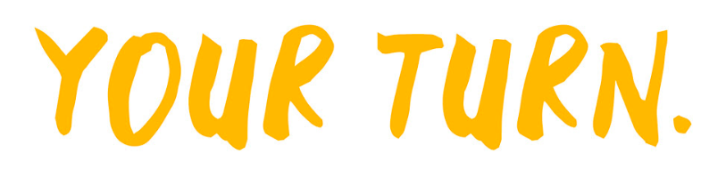

For the Your Turn. branding I turned to traditional Maori and Pasifika emblems for inspiration including but
not limited to imagery drawn from mythology, traditional carving and weaving patterns. We eventually decided
it was important that the design spoke to something that is integral in both cultures and widely understood
by other cultures; so I ran with a design heavily inspired by weaving for the social media profile photo.
As far as the typeface goes, the client had expressed they wanted it to have a handwritten quality verging
on a brush stroke, so I used the font “Black Space” for this element of the design and other branding
purposes.
The colour scheme was briefed to include a range of warm toned yellows and oranges to not only be eye
catching but also align with the brands values of being a support network for Maori and Pasifika youth.
“Your Turn. is a podcast (and eventually a TV series) that aims to become an enterprise where you Pasifika
and Maori can get to know other mentors from similar backgrounds. As minorities, Pasifika and Maori youth
still struggle in the modern world due to a lack of information, resources, and interest in change. This
comes down to many reasons, one main factor being the devotion and tradition within our own families. This
podcast will take a modern approach to having a healthier and more prosperous lifestyle, while putting our
young people in touch with the opportunities and information that can help them do the same. We will explore
these themes through the power of conversation with more experienced community members, all while staying
true to the culture that makes us unique.”
-Fisi-belle Hope Carrasco Rex, Your Turn. founder